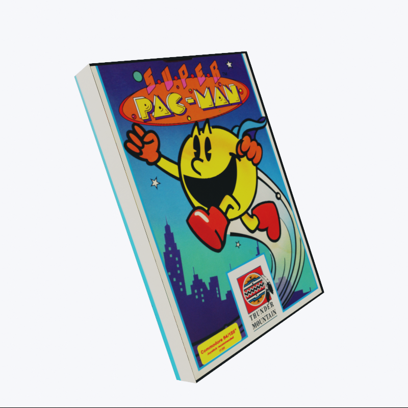
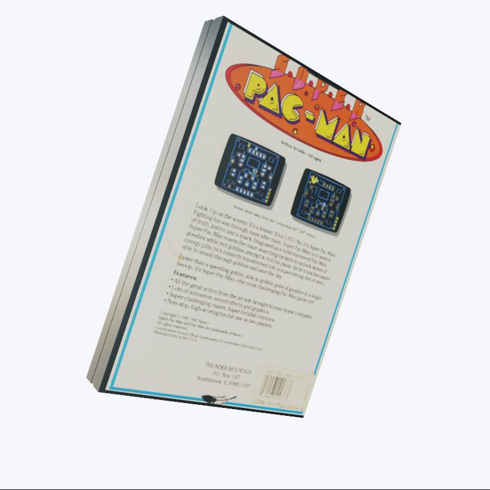

Commodore 64
Super Pac-Man
The game "Super Pac-Man" must be played differently than the usual Pac-Man. Pac-man has also to watch out for the 4 ghosts in the labyrinth, but only if he hasn't eaten the green or the yellow energy pills and is on the way with his normal size.
The yellow energy pills make it possible to eat the ghosts and with the green ones Pac-Man mutates to Super Pac-Man, where he is immune against ghosts and can open doors without having the key.
€12.99
Add to cart